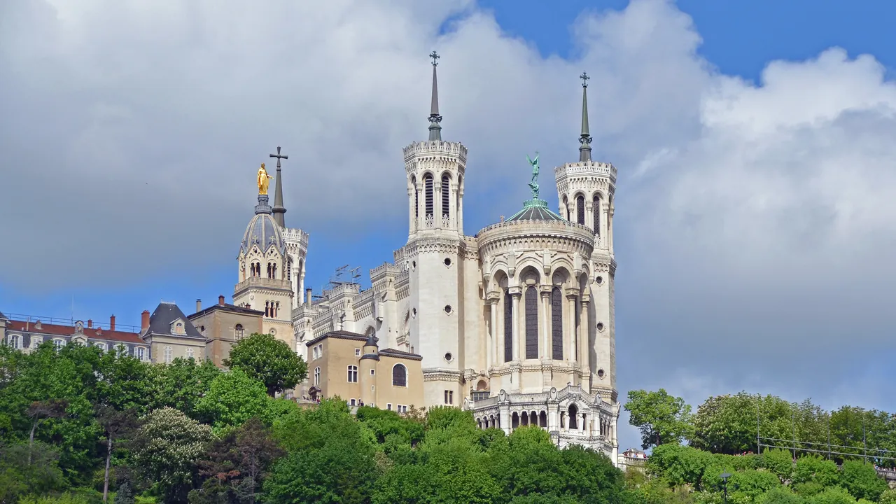
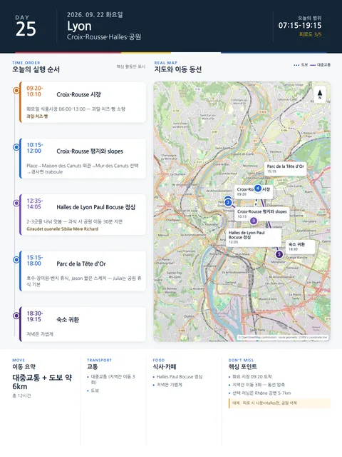

Day 25 · 9/22 화 · Lyon

오늘의 주요 장소


- 핵심 실행
- Croix-Rousse·Halles·공원
- 권장 출발
- 08:30 시장
- 완충
- Halles 전후 60분
- 예약
- 이 날짜로 잡힌 예약 없음 · 현황
시간표
| 시간 | 일정 | 실행 포인트 |
|---|---|---|
| 07:15–08:00 | Jason 선택 러닝 | Rhône 강변 5–7km. 전날 무릎피로가 있으면 생략 |
| 08:00–09:00 | 숙소 아침·샤워 | 시장에서 간식·과일 구매 예정 |
| 09:20–10:10 | Croix-Rousse 시장 | 시장 화·금·토·일 06:00–13:30 (약 95팀) / 수·목 06:00–13:00 (약 23팀) · 휴무 월요일. 과일·치즈·빵 소량 구매 |
| 10:15–12:00 | Croix-Rousse 평지와 slopes | Place de la Croix-Rousse→Maison des Canuts 외관→Mur des Canuts 선택→경사면 traboule |
| 12:00–12:30 | 대중교통으로 Halles 이동 | C선·메트로·트램 조합, 혼잡 시 택시 |
| 12:35–14:05 | Halles de Lyon Paul Bocuse 점심 | Giraudet quenelle, Sibilia charcuterie, Mère Richard cheese 등 2–3곳을 나눠 맛봄 |
| 14:15–15:00 | 숙소 또는 카페 휴식 | 과식했으면 공원 이동을 30분 늦춤 |
| 15:15–17:15 | Parc de la Tête d’Or | 호수, 장미원·식물원 외부, 벤치 휴식. Jason 짧은 스케치 가능 |
| 17:15–18:00 | Julia 선택 수영 또는 공원 카페 | Julia는 LOU Piscine으로 이동하기보다 이날 공원 휴식을 기본으로 함 |
| 18:30–19:15 | 숙소 귀환·휴식 | 저녁은 가볍게 |
| 19:45–21:00 | 가벼운 저녁 | cervelle de canut·샐러드·생선 등. 부숑 3회째는 피함 |
피로도
3/5
이 날의 장소
일자별 시간표와 본문 표기에서 찾은 것이다. 하루의 전부가 아니라 장소 카드가 있는 것만 담는다.
이 날의 메모
Croix-Rousse 시장·비단동네, Halles Paul Bocuse와 도시공원
- 오늘의 결론: 시장·언덕·실내시장·공원이 성격이 달라 지루하지 않지만, 이동이 많다.
- 상태: 고정
핵심 행동 (최대 3개)
- Croix-Rousse를 전망지가 아니라 비단노동자의 주거·작업도시로 보기
- Halles에서는 한 식당에 오래 앉기보다 지역 식재료를 2–3종 비교하기
- Parc de la Tête d’Or에서 장기여행의 완충시간을 확보하기
실행 시간표
오늘 지도
삭제 및 단축 순서 (늦었거나 피곤할 때)
- 도시경관 우선: Croix-Rousse에서 Saône 방향으로 천천히 하산
- 현대도시 우선: 공원 대신 Confluence와 Navigône 수상교통
- 비 오는 날: Halles 체류 연장 (9/22 화는 Beaux-Arts 화요일). 노천 시장은 우천 대안이 아니다 — 실내는 Musée des Confluences 운영·요금 S2 조사
- Julia 수영: LOU Piscine 25m 실내풀 또는 50m 야외풀의 당일 자유수영 시간을 별도 확인하여 공원 대신 배치
대안 대책 (우천·휴관·교통 장애)
- Croix-Rousse 시장 짧게, Halles 체류 연장, Beaux-Arts 2시간
상세 실행 확인
- 최고 리스크
- 지역간 이동 3회
- 우선 삭제
- 공원
- 대체안
- 시장+Halles만
- 식사·휴식
- Halles 점심
- 잠금 필요
- 식당 휴무
Google 실행지도
Croix-Rousse 시장 · Halles Paul Bocuse · Tête d'Or
지도 펼치기
지도는 펼칠 때만 불러옵니다.
Daily Action Map

실제 좌표와 OpenStreetMap을 사용한 실행용 요약입니다. 도로·대중교통 상황은 출발 직전에 다시 확인하세요.